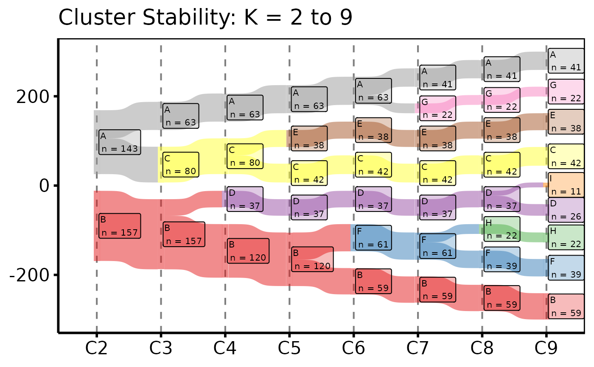

Validates a wide cluster-assignment data frame, resolves node level
ordering, computes default node colours if not supplied, and pre-computes
the long-format Sankey data. Call plot.hv_sankey on the
result to obtain a bare ggplot2 Sankey diagram using
ggsankey geoms.
Usage
hv_sankey(
data,
cluster_cols = paste0("C", 2:9),
node_levels = NULL,
node_colours = NULL
)Arguments
- data
Data frame; one row per patient. Must contain all columns named in
cluster_cols.- cluster_cols
Character vector of column names giving the cluster assignments at each value of K, in ascending K order. Default
paste0("C", 2:9).- node_levels
Character vector giving the display order of node labels (bottom to top within each column). If
NULL(default), the existing factor levels of the first cluster column are used.- node_colours
Named character vector mapping node labels to fill colours. If
NULL(default), colours are drawn from an inline Set1 hex palette in the orderc(2, 6, 8, 4, 3, 5, 7, 1, 9).
Value
An object of class c("hv_sankey", "hv_data"):
$dataThe long-format Sankey data frame (four columns:
x,node,next_x,next_node).$metaNamed list:
cluster_cols,node_levels,node_colours,n_patients,n_k.$tablesEmpty list.
Examples
dta <- sample_cluster_sankey_data(n = 300, seed = 42)
if (requireNamespace("ggsankey", quietly = TRUE)) {
# 1. Build data object
sn <- hv_sankey(dta)
sn # prints cluster cols and node count
# 2. Bare plot -- undecorated ggplot returned by plot.hv_sankey
p <- plot(sn)
# 3. Decorate: axis labels and theme
p +
ggplot2::labs(x = NULL, title = "Cluster Stability: K = 2 to 9") +
theme_hv_poster()
}
#> Warning: The `size` argument of `element_rect()` is deprecated as of ggplot2 3.4.0.
#> ℹ Please use the `linewidth` argument instead.
#> ℹ The deprecated feature was likely used in the ggsankey package.
#> Please report the issue at <https://github.com/davidsjoberg/ggsankey/issues>.
